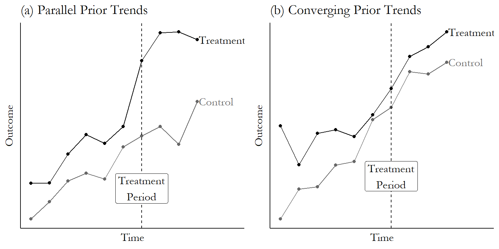

Shocks
Shock-based designs use an external shock to limit selection bias.
They are very hard to find, but if you do, you can reasonably estimate causal effects.
They are sources of exogenous variations in the X, which are crucial to causality when we have some of the problems discussed before.
A shock is often considered the first-best solution to causal inference (randomized control trials are the second-best).
In social sciences, we cannot have randomized control trials. It is not feasible to have experiments.
That is why we often explore the idea of “Natural experiments” or “Natural shocks” (I often use the terms interchangeably)
Shocks
A Natural experiment is an exogenous variation that change a variable in a random subset of firms.
- Regulations, laws, etc.
- Natural disasters.
- Sudden death of CEOs or a product, etc.
- The gender of a newborn.
Because the variation that occur in x is truly exogenous, the CMI holds and thus we can infer causality.
Shocks
The idea of a natural shock is often mixed with the difference-in-differences (DiD) design.
It is more common that it should that people refer to shocks when they want to refer to DiD.
A Did design explores a Natural shock to estimate causal effects.
A good shock generates, by nature, random assignment.
Remember
Remember:
When dealing with causal inference, we have to find ways to approximate what the hidden potential outcome of the treated units is.
That is, the challenge in identifying causal effects is that the untreated potential outcomes, \(Y_{i,0}\), are never observed for the treated group (\(D_i= 1\)). The “second” term in the following equation:
ATET = \(\frac{1}{N} (E[Y_{i,1}|D_i=1] - E[Y_{i,0}|D_i=1])\)
We need an empirical design to “observe” what we do not really observe (i.e., the counterfactual).
Single differences
There are two single differences we can use to estimate the causal effect of a treatments (i.e., a shock).
1) Single Cross-Sectional Differences After Treatment
2) Single Time-Series Difference Before and After Treatment
Single differences
1) Single Cross-Sectional Differences After Treatment
One approach to estimating a parameter that summarizes the treatment effect is to compare the post-treatment outcomes of the treatment and control groups.
This method is often used when there is no data available on pre-treatment outcomes.
It takes the form:
\[y=\beta_0+\beta_1d_i+\epsilon\]
where \(d_i\) is a dummy marking the units that are treated. The treatment effect is given by \(\beta_1\)
This is a cross-sectional comparison, using only post-treatment values.
Single differences
1) Single Cross-Sectional Differences After Treatment
You may add the interaction between the treatment dummy and the years.
\[y=\beta_0+\beta_1d_i\times year_1+\beta_2d_i\times year_2 +\beta_3d_i\times year_3+ . . . +\epsilon\]
This design allows the treatment effect to vary over time by interacting the treatment dummy with period dummies.
What is the endogeneity concern here?
The endogeneity concern is that these firms’ \(y\) were different and could become more different between the treated and control groups even if the shock had not happened.
That is, there is something in the residual that explains the differences in \(y\) that is correlated with the \(d\).
Single differences
2) Single Time-Series Difference Before and After Treatment
A second way to estimate the treatment effect is to compare the outcome after the treatment with the outcome before the treatment for just those units that are treated.
The difference from before is that you have data before the treatment, but you only have data for the treated units.
\[y=\beta_0+\beta_1 time+\epsilon\]
where \(time\) marks the years after the treatment. The treatment effect is given by \(\beta_1\)
Single differences
2) Single Time-Series Difference Before and After Treatment
You can also estimate a multi-year regression.
\[y=\beta_0+\beta_1year_1 +\beta_2\times year_2 +\beta_3\times year_3+ . . . +\epsilon\]
What is the endogeneity concern here?
The endogeneity concern is that these firms’ \(y\) could have changed over the period of observation even if the shock had not happened.
That is, there is something in the error term that explains \(y\) that is correlated with the \(year\) dummies.
Single differences
The combination of the 1) Single Cross-Sectional Differences After Treatment and 2) Single Time-Series Difference Before and After Treatment is called Difference-in-Differences.
Difference-in-Differences
Difference-in-Differences
This is one of the most popular methods in social sciences for estimating causal effects in non-experimental settings.
The literature is exploding over the recent years.
There is one group that is treated, another is the control.
There are two periods of time, before and after the treatment.
And the treated group receives the treatment in the second period.
The key identifying assumption is that the average outcome among the treated and comparison populations would have followed “parallel trends” in the absence of treatment.
Difference-in-Differences
The two single difference estimators complement one another.
The cross-sectional comparison avoids the problem of omitted trends by comparing two groups over the same time period.
The time series comparison avoids the problem of unobserved differences between two different groups of firms by looking at the same firms before and after the change.
The double difference, difference-in-differences (DD), estimator combines these two estimators to take advantage of both estimators’ strengths.
(Roberts and Whited, 2014)
Difference-in-Differences
The counterfactual is determined by the assumption of a parallel trend between the treated and control groups. MM

Difference-in-Differences

Difference-in-Differences
Inserting more periods.

Difference-in-Differences
A more realistic example. (The effect)

Difference-in-Differences
Assumption 2 (No anticipatory effects).
The treatment has no causal effect prior to its implementation.
\[Y_{i,0,t=1}=Y_{i,1,t=1}\]
Prior to the treatment (t=1), there is no effect of the treatment.
Estimation
Let’s see how to implement a DiD model. The canonical DiD model is the followin:
\[y_{i,t} = \beta_0 + \beta_1 time_t + \beta_2 treated_i + \beta_3 treated_i \times time_t + \epsilon_{i,t}\]
Where:
\(treated_i\) is a dummy marking the units that received the treatment.
\(time_t\) is a dummy marking the year of the treatment and the years after.
Estimation
Let’s see how to implement a DiD model. The canonical DiD model is the followin:
\[y_{i,t} = \beta_0 + \beta_1 time_t + \beta_2 treated_i + \beta_3 treated_i \times time_t + \epsilon_{i,t}\]
\(\beta_0\) is the average \(y_{i,t}\) for the control units before the treatment (\(time_t\) =0 and \(treated_i\) = 0).
\(\beta_0+\beta_1\) is the average \(y_{i,t}\) for the control units after the treatment (\(time_t\) =1 and \(treated_i\) = 0).
\(\beta_0+\beta_2\) is the average \(y_{i,t}\) for the treated units before the treatment (\(time_t\) =0 and \(treated_i\) = 1).
\(\beta_0+\beta_1+\beta_2+\beta_3\) is the average \(y_{i,t}\) for the treated units after the treatment (\(time_t\) =1 and \(treated_i\) = 1).
Estimation
|
Post-treat. (1) |
Pre-treat. (2) |
Diff. (1-2) |
| Treated (a) |
\(\beta_0+\beta_1+\beta_2+\beta_3\) |
\(\beta_0+\beta_2\) |
\(\beta_1+\beta_3\) |
| Control (b) |
\(\beta_0+\beta_1\) |
\(\beta_0\) |
\(\beta_1\) |
| Diff. (a-b) |
\(\beta_2+\beta_3\) |
\(\beta_2\) |
\(\beta_3\) |
This is why we call difference-in-differences.
\(\beta_3\) gives us an estimate of the treatment effect on the treated units (ATE).
This is very popular because you can run as a regression.
Many papers simply show this table as final result.
However, it is also possible that you include additional covariates (i.e., controls) in a DiD design.
You can also modify this to test the timing of the treatment (discussed later).
Controls in DiD
If you add controls, you have something in the form:
\[y_{i,t} = \beta_0 + \beta_1 time_t + \beta_2 treated_i + \beta_3 treated_i \times time_t + \beta_4x_{1,i,t}+ \beta_5x_{2,i,t}+ ...+ \epsilon_{i,t}\]
Bad Controls problem: Never add a control that is also affected by the treatment.
Using pre-treatment values is good practice.
If you are including a good control, you should get lower standard deviations of the estimated effects.
Controls in DiD
One way of adding more controls is by adding FEs.
\[y_{i,t} = \beta_0 + \beta_1 time_t + \beta_2 treated_i + \beta_3 treated_i \times time_t + FirmFE+ YearFE + \epsilon_{i,t}\]
They help control for unobserved heterogeneity at the firm-level and in each year.
But what do \(\beta_1\) and \(\beta_2\) mean now?
Answer: They are perfectly correlated with the \(FirmFE\) and \(YearFE\), respectively.
Reason: because they don’t vary across each firm and year, respectively.
The software will most likely drop one \(FirmFE\) and one \(YearFE\), thus \(\beta_1\) and \(\beta_2\) mean nothing.
I am guilty of this mistake because a referee asked and I couldn’t reply properly.
Controls in DiD
You will be better off if you estimate:
\[y_{i,t} = \beta_0 + \beta_3 treated_i \times time_t + FirmFE+ YearFE + \epsilon_{i,t}\]
This is called a generalized DiD.
The \(FirmFE\) allow that each firm has one intercept (i.e., one average \(y_{i,t}\)).
The \(YearFE\) accommodate a potential shock in \(y_{i,t}\) in each year.
Controls in DiD
If assignment is random, then including additional covariates should have a negligible effect on the estimated treatment effect.
Thus, a large discrepancy between the treatment effect estimates with and without additional controls raises a red flag.
If assignment to treatment and control groups is not random but dictated by an observable rule, then controlling for this rule via covariates in the regression satisfies the conditional mean zero assumption required for unbiased estimates.
Regardless of the motivation, it is crucial to remember that any covariates included as controls must be unaffected by the treatment, a condition that eliminates other outcome variables and restricts most covariates to pre-treatment values.
(Roberts and Whited, 2014)


Comment about DiD